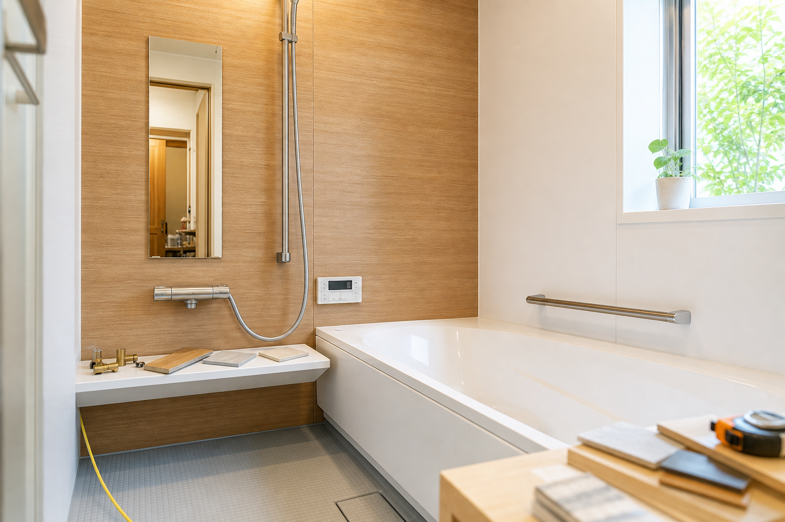
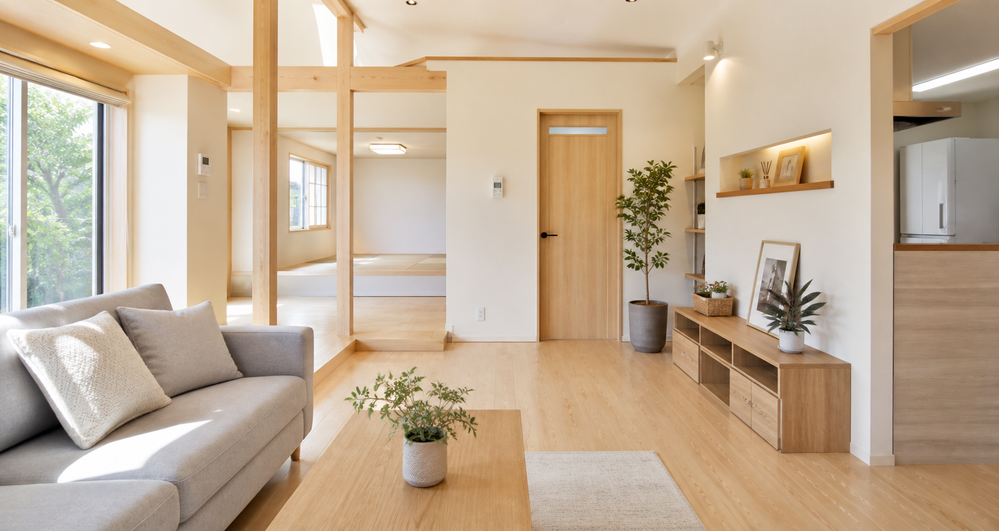
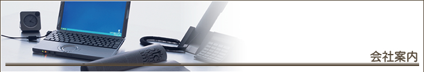

01
小さな傷みも早めに補修
外壁、屋根、キッチン、浴室、トイレなど、部分的なリフォームで住まいの悩みを解決。 大切な住まいを長持ちさせるため、必要な工事を見極めます。
Kensosha

北海道釧路市の住まいのホームドクター
住宅リフォームから内外装工事まで。お客様の立場で考え、 不必要な工事をすすめず、わかりやすく丁寧にご提案します。
01
Strength

外壁、屋根、キッチン、浴室、トイレなど、部分的なリフォームで住まいの悩みを解決。 大切な住まいを長持ちさせるため、必要な工事を見極めます。
工程表の作成、近隣への挨拶、施工後の家具・家電移動や清掃まで丁寧に対応します。
お客様の考える形を実現するため、内容と理由をわかりやすく説明します。
内外装事業部・リフォーム事業部として、住宅から店舗、病院、ビルまで施工実績があります。
02
Services
外壁の張替え、塗装、シーリング、屋根板金、雨漏り補修。
クロス、床、和室から洋室への変更、内装仕上げ工事。
キッチン、浴室、洗面化粧台、トイレのリフォーム。
断熱工事、塗装工事、住まいの快適性を高める工事。
木建具、サッシ調整、家具工事、造作に関わる工事。
電気工事、設備工事を含めた住まい全体の改修相談。
03
Area
釧路市、根室市、釧路町、白糠町、音別町、阿寒町、鶴居村、厚岸町など、 地域の住まいのリフォームに対応しています。
04

Company
「リフォームをしてよかった」というお客様の声を財産に、真面目な仕事を積み重ねてきました。
Contact
外壁、屋根、水まわり、内装など、気になる傷みや使いにくさがあればお気軽にご相談ください。 既存のお問い合わせページから、そのまま連絡できます。